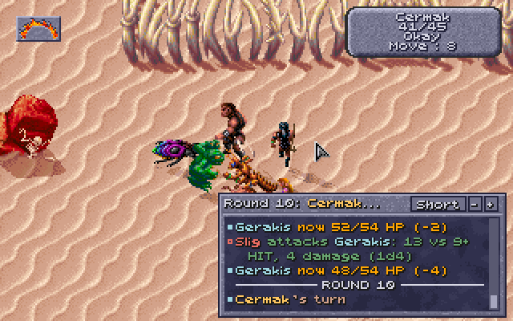
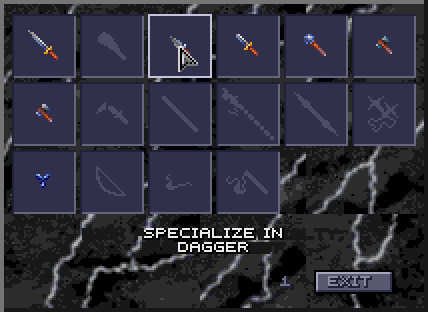

Getting started
- Unzip the mod anywhere and double-click
Start Obsidian Edition.bat(the first time, it offers to install Python; see the README). Press Start the game. The game starts with the mod and your options, and every roll shows as it happens in the Loader's dice log, and in the game itself when you press L:

- Make your own party (CREATE CHARACTERS): weapon specs and kits are chosen when a character is made. The game's own four, used when you make none, are given weapon specs to suit them, and with kits on, a kit or features of their own (see Multiclass kits).
Already playing? Saves made before load and play with the mod's fixes and rules, but kits, fuller starting gear and much of the new content come with a new game (see the features page's saved games note).
Playing
The pointer has three modes, changed with a right-click: Walk, Attack and Look; a left-click acts. Look at someone to Talk, at a thing to Use or Pick Up it, and at a monster in a fight to see its hit points, AC and defences. Resting at a fire ring fills hit points, PSP and spell slots.
The quality of life changes list what the mod makes easier.
Quality of life
In the game:
| Change | What it does |
|---|---|
| Combat log | L on the map shows every roll in the game, at the least, in short or in detail, and L again hides it: in a fight, or after one to check a thief's roll or a new level's hit points. A panel at the map's lower right: its scrollbar reads back, - and + collapse it or open it up with filters. Its A shows the party's count of arena fights. Or, on the Options tab, a strip always shown below the map (the mouse wheel reads back, on Windows). |
| Tab and Enter | On a party member's turn in a fight, Tab chooses the nearest enemy (Tab again for the next, Shift+Tab back) and Enter attacks it, walking up to it first if need be, even behind someone else: no aiming with the mouse. A red ring marks the enemy chosen (or, on the Options tab, every enemy). |
| Scrolling with the mouse | Press the wheel and drag the map. Optionally, hold the right button and drag. |
| A steady view in fights | The view no longer drifts after each figure walking near the screen's edge in a fight; it moves only to bring back one that has walked off the screen. Without the mod: it follows them. |
| 40 saves | Four pages of ten in the save and load window (PAGE 1 to PAGE 4, or PgUp and PgDn). Without the mod: 10. |
| 29 characters on disk | The roster keeps 29 characters made with CREATE CHARACTERS. Without the mod: 19. |
| DELETE in the roster (a bug fixed) | Deletes the character you chose. Without the mod: with the list scrolled, it deleted another one. |
| New characters' thief skills (a bug fixed) | A character not yet played shows its thief skills. Without the mod: they showed as 0. |
| Spells on the Effects screen (a bug fixed) | A stray click on a spell's icon no longer ends the spell. A psionic power's icon still ends the power, which is how you stop one. |
| No copy protection | The question from the manual never comes. |
| THAC0, saves and thief skills on screen | The inventory screen shows THAC0, all five saves, THAC0 with each weapon, DEX's adjustments and a thief's skills; View Character shows the saves, each labelled, MOVE and THAC0, and for a character of several classes which class goes up next. |
| Spell slots on the USE screen | Spells left of each level, and the most after resting. |
| The Look box | In a fight, a monster's hit points, AC, THAC0, alignment, magic resistance and chief defence; closing the box tells the rest. |
| Item boxes | A wand's or other charged item's charges left; a cloak's, boots' or belt's bonus to thief skills. |
| The Effects screen | Names each kit and weapon spec, a page at a time when there are many. |
| Game speed | DOSBox runs the game faster than GOG's settings (choose GOG's own, faster or fastest), so the party walks smoothly with shadows and dust. |
| Game window | Double, triple or quadruple size, or full screen, chosen at the top of the Loader. |
| On the map | The party's figures show what they wear, everyone casts a shadow, and walkers raise dust (each can be switched off). Elves have pointed ears, and half-elves a look of their own instead of the humans' (also switchable). |
| Crash and freeze reports | If the game or DOSBox stops with an error, the message stays on screen and the Loader writes a report to send, with the game's own error message in it; if the game freezes, Freeze report on the Loader saves what it was doing. |
| Item reports | If an item vanishes from the party with nothing ordinary to explain it (not dropped, given, sold, used up or broken), the Loader saves a report to send, as for a crash. |
In the Loader's window:
- The dice log: every roll as it happens, with what it needed and where each bonus came from; Save... keeps it as a text file.
- Characters: each character's sheet as the game's View Character lays it out, with THAC0 by weapon, saves, attacks a round, what they wear, spell slots and thief skills.
- Dialogue: everything said, with the speaker and the replies offered.
- Spells: every spell's and psionic power's dice, saves, effects and duration, and each party member's caster level for it.
- Saves under their names: a copy of every save in the Named saves folder, named as you named it in the game; the Options tab's Saves section opens the folder and puts a copy back in a slot to load.
- Text size (A+ and A-, or Ctrl + and Ctrl −) and keyboard access to everything.
Play Dark Sun (in-game rolls).batplays with all of the above in the game but no Loader window;Show Save.batshows the party in a save file.
Making a party
On the main menu choose CREATE CHARACTERS, right-click an empty slot and choose NEW. Click the portrait for race and sex, mark one to three classes, choose a cleric's or ranger's sphere and an alignment, click the die to roll, and press DONE. The panel under the classes has the mod's KITS page (kits). After DONE a warrior picks its weapon specs in a window of weapon pictures (weapon specialization), as a preserver picks its spells. A party has one to four characters, all good or neutral.
Ability scores
Each click of the die rolls a whole character:
- Each score is rolled four times as 4d4 + 4 and the best kept (8 to 20), then the race's adjustment is added.
- A score below the classes' minimum is raised to it: 17 in the prime requisite, otherwise 9 (clerics, fighters, preservers, thieves), 12 (druids, psionicists), 13 (gladiators) or 14 (rangers). A character of several classes takes the highest minimum of each score.
- What the die gives is what you get. A score can be lowered with a right click, and the points freed raise others with a left click, but the six never add up to more than the die gave. Under CHR,
SUM:99/101is what they add up to now and the most they may: 2 points to spare. A new class that raises a score to its minimum raises the most with it. Without the mod: a click raises any score to its most. - STORE and RECALL, under the hit points, keep a roll and bring it back (scores, hit points and PSP), as in Baldur's Gate: store a good roll, try the die again, and recall it if nothing better comes. Changing the race, sex, classes or kit forgets the stored roll.
| Class | Prime requisite |
|---|---|
| Fighter, gladiator | STR |
| Cleric, druid, psionicist, ranger | WIS |
| Preserver | INT |
| Thief | DEX |
What the scores do:
- STR: to-hit and damage in melee, and how much is carried.
- DEX: AC (−1 at 15, down to −6 at 24), to-hit with missiles, initiative, thief skills, the two-weapon penalty, and dodging fire, cold and electricity (saving throws).
- CON: hit points, saves against paralysis, poison and death; at 20 or more, a hit point comes back now and then.
- INT: for preservers, the chance to learn a spell from a scroll and how many spells of each level they can know (learning spells).
- WIS: priests' bonus spell slots, and saves against mind-affecting magic.
CHA: how some people take to the party, and the party leader's CHA lowers what shops ask:
| Leader's CHA | 17 or less | 18 | 19 | 20 | 21 | 22 | 23 | 24 | 25 | |---|---|---|---|---|---|---|---|---|---| | Shops ask | full price | 5% less | 10% less | 15% less | 20% less | 25% less | 30% less | 35% less | 40% less |
Shops pay 60% of an item's price when you sell. A magical item you sell stays in the merchant's stock, to buy back; anything else sold is gone. Without the mod: CHA makes no difference to prices, shops pay the full price, and everything sold is gone.
Races
| Race | STR | DEX | CON | INT | WIS | CHA | Notes |
|---|---|---|---|---|---|---|---|
| Human | one class at a time, but can change class | ||||||
| Dwarf | +1 | −1 | +2 | −2 | better CON saves | ||
| Elf | +2 | −2 | +1 | −1 | |||
| Half-elf | +1 | −1 | |||||
| Half-giant | +4 | −5 | +2 | −5 | −3 | −3 | double hit dice; holds a two-handed weapon in one hand |
| Halfling | −2 | +2 | −1 | +2 | −1 | better CON saves | |
| Mul | +2 | +1 | −1 | −2 | |||
| Thri-kreen | +2 | −1 | +1 | −2 | base AC 5, moves 15 (others 12); claws that cut (edged, not crushing); no armour, cloaks, belts, boots or rings |
With each score rolled 8 to 20 before the adjustment, a race's scores run from 8 to 20 plus its adjustment: a half-giant's STR 12 to 24, its DEX and INT 3 to 15, its WIS and CHA 5 to 17. (The Dark Sun book caps a half-giant's DEX and INT at 15 and its WIS and CHA at 17, with smaller adjustments; the game gets the same caps from these larger ones.)
Classes by race (the creation screen greys the rest):
| Race | Cleric | Druid | Fighter | Gladiator | Preserver | Psionicist | Ranger | Thief |
|---|---|---|---|---|---|---|---|---|
| Human | ✓ | ✓ | ✓ | ✓ | ✓ | ✓ | ✓ | ✓ |
| Dwarf | ✓ | ✓ | ✓ | ✓ | ✓ | |||
| Elf | ✓ | ✓ | ✓ | ✓ | ✓ | ✓ | ✓ | |
| Half-elf | ✓ | ✓ | ✓ | ✓ | ✓ | ✓ | ✓ | ✓ |
| Half-giant | ✓ | ✓ | ✓ | ✓ | ✓ | |||
| Halfling | ✓ | ✓ | ✓ | ✓ | ✓ | ✓ | ✓ | |
| Mul | ✓ | ✓ | ✓ | ✓ | ✓ | ✓ | ||
| Thri-kreen | ✓ | ✓ | ✓ | ✓ | ✓ | ✓ |
Alignment: a druid must be true neutral, a ranger good (lawful, neutral or chaotic good). The others may be any good or neutral alignment.
More than one class
Multiclass (any race but human). A character takes two or three classes at once. Experience is split evenly between them, so each rises more slowly; hit points are shared out (hit points); and the strictest class decides what may be worn and wielded (what each class may use). Gladiators never multiclass. Each class's section below lists its combinations and the races that can take them; in all:
| Race | Two classes | Three classes |
|---|---|---|
| Dwarf | cleric/fighter, cleric/psionicist, fighter/psionicist, fighter/thief, psionicist/thief | cleric/fighter/psionicist, fighter/psionicist/thief |
| Elf | any two of cleric, fighter, preserver, psionicist, ranger and thief but fighter/ranger | any three of them without both fighter and ranger |
| Half-elf | as the elf, and a druid with fighter, preserver, psionicist or thief | as the elf, and a druid with any two of fighter, preserver, psionicist and thief |
| Half-giant | cleric/fighter, cleric/psionicist, cleric/ranger, fighter/psionicist, psionicist/ranger | none |
| Halfling | cleric or druid with fighter, psionicist or thief (and cleric/ranger); fighter/psionicist, fighter/thief, psionicist/ranger, psionicist/thief, ranger/thief | fighter/psionicist/thief, psionicist/ranger/thief |
| Mul | cleric or druid with fighter, psionicist or thief; fighter/psionicist, fighter/thief, psionicist/thief | cleric/fighter/thief, druid/fighter/thief, fighter/psionicist/thief |
| Thri-kreen | cleric or druid with fighter or psionicist; cleric/ranger, fighter/psionicist, psionicist/ranger | cleric/fighter/psionicist, cleric/psionicist/ranger, druid/fighter/psionicist |
No character is both cleric and druid, nor two of fighter, gladiator and ranger.
Dual class (humans only). A human has one class, and can change to another with DUAL on a portrait's right-click menu when:
- it is 2nd level or more and has changed class at most once before;
- its current class's prime requisite is 15 or more, and the new class's 17 or more;
- the new class is of another group than every class it has had: priests (cleric, druid), warriors (fighter, gladiator, ranger), preserver, psionicist, thief;
- its alignment suits the new class (a druid true neutral, a ranger good).
The new class starts at 1st level. The old class stops rising, and what it gives (its hit points, THAC0, saves, weapon specs and kit) sleeps until the new class's level passes the old one's; then both count. The new class can take a kit of its own, so a human may end up with three. Some kits rule out classes a human could change to (kits).
Hit points
| Class | Hit die | At 10th level |
|---|---|---|
| Fighter, gladiator, ranger | d10 | +3 |
| Cleric, druid | d8 | +2 |
| Psionicist | d6 | +2 |
| Thief | d6 | d6 |
| Preserver | d4 | d4 |
- Every hit die is rolled twice and the better kept, at creation (one die for every starting level) and at every level up. Without the mod: one roll.
- The hit points are as rolled: clicking them on the creation screen does nothing. Changing CON there adds or takes off its bonus for every level. Without the mod: a click sets them anywhere the dice could have, and a higher CON adds nothing unless they are below the new least.
- Half-giants roll double. A roll counts at least 2 with CON 20, 3 with CON 21-22 and 4 with CON 23 or more.
- CON's bonus comes with every level: for a fighter, gladiator or ranger +1 at CON 15, +2 at 16, +3 at 17, +4 at 18, +5 at 19-20, +6 at 21-23 and +7 at 24-25 (−1 at 4-6); for anyone else at most +2.
- A character of several classes adds CON's bonus to every die (the fighter's bonus on every die if one of its classes is a warrior), and the total is divided by the number of classes. Without the mod: the dice are added and the total divided, and CON's bonus counts once a level of the highest class.
- Three kits have a die of their own.
- At 0 hit points a character is Out Cold; at −10, dead.
THAC0 by level
AD&D's tables; a character of several classes uses its best.
| Level | 1 | 2 | 3 | 4 | 5 | 6 | 7 | 8 | 9 | 10 |
|---|---|---|---|---|---|---|---|---|---|---|
| Fighter, gladiator, ranger | 20 | 19 | 18 | 17 | 16 | 15 | 14 | 13 | 12 | 11 |
| Cleric, druid | 20 | 20 | 20 | 18 | 18 | 18 | 16 | 16 | 16 | 14 |
| Thief | 20 | 20 | 19 | 19 | 18 | 18 | 17 | 17 | 16 | 16 |
| Psionicist | 20 | 20 | 19 | 19 | 18 | 18 | 17 | 17 | 16 | 16 |
| Preserver | 20 | 20 | 20 | 19 | 19 | 19 | 18 | 18 | 18 | 17 |
Without the mod: clerics and druids improve by about 2/3 a level (19 at 3rd, 17 at 6th, 15 at 9th); the rest are as above.
The classes
| Class | Hit die | Prime requisite | Races | Armour | Weapons | Kits |
|---|---|---|---|---|---|---|
| Fighter | d10 | STR | all | any | any | Myrmidon, Sentinel, Ravager |
| Gladiator | d10 | STR | all | any | any | Arena Champion, Twin-blade, Brute |
| Ranger | d10 | WIS | not dwarf, mul | any (two weapons without penalty in light only) | any | Stalker, Seeker, Justifier |
| Thief | d6 | DEX | not half-giant, thri-kreen | light (with another class: heavier, without thief skills) | any | Assassin, Swashbuckler, Shinobi |
| Preserver | d4 | INT | elf, half-elf, human | none | daggers, staves, slings | Arcanist, Scholar, Battle Mage |
| Cleric | d8 | WIS | all | any | its sphere's | Healer, Crusader, Elementalist |
| Druid | d8 | WIS | half-elf, halfling, human, mul, thri-kreen | none | any but great axes | Grove Warden, Wanderer, Lifebinder |
| Psionicist | d6 | WIS | all | light | small weapons | Mind Warrior, Mind Bender, Kineticist |
The THAC0 and experience tables cover every class; new items lists what the mod adds to find.
Starting gear. Each class's section names what a new character starts with. A character of several classes gets one class's gear (the first of fighter or ranger, cleric, thief, psionicist, preserver and druid), less what its classes can't use. The mod then adds plain gear, as each section says: a weapon in hand it can use (a thief/psionicist, which can't use the long sword, gets a bone short sword), a sling if it has no bow or sling, leather armour where it may wear it, and a cloak for a Stalker, an Assassin or a Shinobi (some kits get weapons of their own: see Kits). A thri-kreen gets nothing more than the game's own starting gear: its claws serve it better than another weapon, and it wears none of the rest; its weapon spec is the chatkcha if none is picked. A multiclass preserver starts with no armour, so it can cast. Nothing is given that the character can't use or already has. The game's own party gets the same. Without the mod: the class's gear only, armour it can't use in the backpack.
What each class may use
A character may use an item only if every one of its classes allows it, the strictest winning:
| Class | Armour and helms | Shields | Weapons |
|---|---|---|---|
| Psionicist, whatever its other classes | light only (leather, hide, silk) | leather only | daggers, short swords, maces, clubs, chatkchas, bows and slings (as the game's lists allow) |
| Thief | light only; with a warrior or cleric class, as that class allows, but no thief skills in heavier armour | leather ones; with another class, only if that class allows shields | as its classes allow |
| Preserver, one class | none | none | a preserver's |
| Druid | none | none | any |
| Cleric | any | any | air: missile and thrown weapons, daggers; earth: stone, obsidian, metal, wood; fire: obsidian; water: bone, wood |
- A preserver with another class may wear what that class allows, but casts no spells while wearing armour (a helm counts, a shield doesn't). Bracers of defense aren't armour.
- A thief with another class (a fighter/thief, a cleric/thief) may wear what that class allows, but in armour heavier than leather, hide or silk it has no thief skills (all 0) and no backstab.
- A human who was a fighter, gladiator or ranger and is now a thief or a preserver (or the other way round) is treated the same way: it may wear the warrior's armour, losing its thief skills, or its spells, while it does. So is a human cleric who became a thief: the cleric's armour, without thief skills.
- A ranger may always use a bow.
- A human who changed class is held by its new class (but for the warrior's or cleric's armour above), and may use the weapon specs it specialized in once its old class wakes.
Without the mod: an item was allowed if any of the character's classes allowed it, and a preserver with another class cast in armour.
Each class's section lists the magic weapons it can wield, the mod's new ones marked *. A plain weapon of each type and material is listed as "bone short sword" and the like.
Fighter
d10 · STR · any race · XP for 2nd level 2,000, for 10th 500,000
How it plays. The steadiest front-liner: any armour, any shield, any weapon, the best THAC0, and it masters one weapon spec. Choose it with care: it is the fighter's weapon for the whole game.
What the mod changes.
- Weapon specialization: one weapon type, +1 to hit and +2 damage with 3/2 attacks a round; mastery at 5th level (+3 and +3), grand mastery at 9th (the damage die a size larger and one more attack). Other weapons attack once a round until 7th level. Without the mod: 3/2 attacks with any weapon, no other bonus.
- Up to 10th level; hit dice rolled twice.
- Two weapons cost to-hit, and the off hand attacks once a round.
Weapons and armour. Everything. A fighter with other classes is held to theirs (what each class may use).
Kits.
Myrmidon. Drilled in a sorcerer-king's legions, where a soldier who falls out of step is left for the kanks. They master two weapons where others master one, but years of obeying orders leave their minds open to anyone who barks them.
Sentinel. Caravan guards and city-gate wardens who live behind their shields, first to see the raiders coming and last to give ground. They trust bone and obsidian over sorcery, and spells bite them harder for it.
Ravager. Raiders of the wastes who fight half-naked under the crimson sun, scarred hide hardening with every season. They charge in close and stay there: bows, slings and shields are for those who mean to live long.
Each kit's gains, costs and starting gear: Fighter kits on the Kits page.
Starting gear. A plain weapon of its weapon spec (in a material its classes allow), a shield, leather chest, arm and leg armour; with fuller starting gear, also a sling.
More than one class.
- Multiclass: cleric/fighter (all but humans); druid/fighter (half-elf, halfling, mul, thri-kreen); fighter/preserver (elf, half-elf); fighter/psionicist (all but humans); fighter/thief (dwarf, elf, half-elf, halfling, mul); cleric/fighter/preserver (elf, half-elf); cleric/fighter/psionicist (dwarf, elf, half-elf, thri-kreen); cleric/fighter/thief (elf, half-elf, mul); druid/fighter/preserver (half-elf); druid/fighter/psionicist (half-elf, thri-kreen); druid/fighter/thief (half-elf, mul); fighter/preserver/psionicist and fighter/preserver/thief (elf, half-elf); fighter/psionicist/thief (dwarf, elf, half-elf, halfling, mul).
- Dual class: with STR 15, a human fighter can become a cleric, druid, preserver, psionicist or thief, never a gladiator or ranger. Its weapon specs sleep with the class; once awake, its specialized weapon specs stay usable whatever the new class allows.
Magic weapons. Every one: Dragonsbane +4, Swiftbite +2, El's Drinker +2, Dark Flame +2, Draketooth +1, Hornblade +1, Bloodwrath +1, Flame Blade* +1; Greenbright* +2, Shadowseeker* +1, Mindshard* +1, Stillwater* +1; Dag's Dagger +3, Terror Blade +2, Galefang* +2, Nightsliver* +2, Hayneedle* +1; Glasshewer* +2, Drakejaw* +1, Soulcrusher +1, Axe +1; Great Axe +3, Headsman* +2; Gythka +3, Gythka +2*, Kreenfang* +1; Linebreaker* +2, Polearm +1, Thornwall* +1; Mace +2, Blackmace +1; Quarterstaff +2, Balk's Staff +1, Parting Staff +1; Gutterknot* +1; Deepbiter* +1; Cahulaks +1; Bow +2, Phrain's Bow +1, Dunesong* +1; Sling +2, Sling +1; Windlash* +1; Skycutter* +2, Chatkcha +1. A Ravager none of the bows, slings, Windlash, chatkchas or Dag's Dagger (thrown).
Gladiator
d10 · STR · any race · XP for 2nd level 2,250, for 10th 600,000
How it plays. The arena's finest: trained in many weapons rather than one, better AC as it rises, and the most varied kits. A gladiator is always a single class (a human may still change class).
What the mod changes.
- Weapon specialization in two weapon types at 1st level, a third at 6th and a fourth at 9th: +1 to hit, +2 damage and 3/2 attacks with each. Without the mod: 3/2 attacks with any weapon.
- AC 1 better from 5th level and 2 better at 10th, with or without armour.
- AD&D's experience table. Without the mod: the fighter's.
- Up to 10th level; hit dice rolled twice.
Weapons and armour. Everything.
Kits.
Arena Champion. Crowd favourites of the fighting pits, schooled to turn every blow with a shield and answer it before the cheering dies. Without one they feel naked on the sand, and fight like it.
Twin-blade. Showfighters who carry a weapon in each hand and make the crowd count the blows. They have no use for a shield, nor for a weapon so heavy it needs both hands.
Brute. Pit fighters bought for size and fed for strength, swinging great axes and mauls that end a bout in one blow. Anything smaller looks like a toy in their hands, and they treat it like one.
Each kit's gains, costs and starting gear: Gladiator kits on the Kits page.
Starting gear. A plain weapon of its first weapon spec, a club in the off hand, leather arm armour; with fuller starting gear, also leather chest and leg armour and a sling.
More than one class.
- Multiclass: none.
- Dual class: with STR 15, a human gladiator can become a cleric, druid, preserver, psionicist or thief.
Magic weapons. Every one (the fighter's list). A Twin-blade none of the two-handed ones (great axes, gythkas, polearms, quarterstaffs, cahulaks, bows, staff sling); a Brute only Great Axe +3, Headsman*, the gythkas, the polearms, the quarterstaffs and Cahulaks +1 in melee, and any missile weapon.
Ranger
d10 · WIS · elf, half-elf, half-giant, halfling, human, thri-kreen · good alignment · XP for 2nd level 2,250, for 10th 600,000
How it plays. A warrior of the wastes: the bow and one more weapon spec, two weapons at no penalty in light armour, hiding and moving silently under the open sky to strike from behind, and a little priest magic late on.
What the mod changes.
- Expertise with the bow and one more weapon spec: a specialist's attacks a round. Without the mod: 3/2 in melee with any weapon.
- Hiding in shadows in a fight with a thief's numbers for its level, halved indoors; a successful hide and move silently makes its next attack from behind.
- Priest spells of its sphere from 8th level, cast as a priest of its level less 7 for damage and duration too (1 slot at 8th, 2 at 9th, 2 and 1 at 10th). Without the mod: cast at its full level.
- AD&D's experience table (2,250 for 2nd level; without the mod: 2,200).
- Up to 10th level; hit dice rolled twice.
Weapons and armour. Everything; any multiclass ranger keeps the bow whatever its other classes allow.
Kits.
Stalker. Hunters of the scrub and the city's shadowed alleys alike, moving where no one is watching and striking before anyone knows they are there. Heavy armour would only slow them down and give them away.
Seeker. Wanderers on a lifelong pilgrimage through the wastes, looking for the spirit that still lives in Athas's broken land. As they come to understand it, the elements begin to answer them, though only through the arms a priest would carry.
Justifier. Hunters hired to deal with whatever is too dangerous for anyone else: a tribe's chieftain, a defiler's lair, a beast that has emptied a village. They train their weapons to a killer's edge and leave prayer to others.
Each kit's gains, costs and starting gear: Ranger kits on the Kits page.
Starting gear. A plain weapon of its weapon spec, bow and arrows, leather chest and arm armour; with fuller starting gear, also leather leg armour (a Stalker a cloak too).
More than one class.
- Multiclass: cleric/ranger and psionicist/ranger (elf, half-elf, half-giant, halfling, thri-kreen); preserver/ranger (elf, half-elf); ranger/thief (elf, half-elf, halfling); cleric/preserver/ranger, cleric/ranger/thief, preserver/psionicist/ranger, preserver/ranger/thief (elf, half-elf); cleric/psionicist/ranger (elf, half-elf, thri-kreen); psionicist/ranger/thief (elf, half-elf, halfling).
- Dual class: with WIS 15, a human ranger can become a cleric, preserver, psionicist or thief (a druid must be neutral, a ranger good). A human of another class with WIS 17 and a good alignment can become a ranger.
Magic weapons. Every one (the fighter's list). A Seeker only its sphere's, and every bow: air, the daggers, bows, slings, Windlash*, the chatkchas; earth, the metal, obsidian, stone and wooden ones (no bone, no slings); fire, the obsidian ones and the bows; water, the bone and wooden ones.
Thief
d6 · DEX · not half-giant or thri-kreen · XP for 2nd level 1,250, for 10th 160,000
How it plays. Locks, traps and pockets out of a fight; in one, it waits for a clear turn, slips into the shadows and backstabs. Light on hit points, so keep it off the front line.
What the mod changes.
- Thief skills from AD&D's table with Dark Sun's race and DEX adjustments. Without the mod: the game's own, much higher, with penalties for what is held.
- Hiding in shadows in a fight to backstab, halved in daylight. Without the mod: backstabs only when the target faces someone else. A backstab does ×2 damage at levels 1-4, ×3 at 5-8, ×4 at 9-10.
- Picking pockets with a thief's Pick Pockets button, from anyone in sight.
- A worn cloak, boots and belt help hiding, moving silently, picking pockets and opening locks.
- AD&D's experience table (1,250 for 2nd level; without the mod: 1,200).
- Up to 10th level, a d6 at 10th; hit dice rolled twice.
Weapons and armour. Any weapon, but only one no heavier than a long sword backstabs (see Equipment); light armour only (leather, hide, silk), and of shields only leather ones (the game's own rule), with another class only if that class allows shields. A thief with a warrior or cleric class, or a human once a warrior, may wear heavier armour that class allows, but has no thief skills and no backstab while it does; an Assassin or Shinobi never may, even after changing class.
Kits.
Assassin. Knives for hire in the templars' cities, where a noble house pays well to see a rival fall. They learn to vanish in the full glare of the sun, and leave locks and purses to lesser thieves.
Swashbuckler. Swaggering rogues of the merchant houses and the elven markets, as handy with a blade as any soldier. All that time spent fighting leaves little for the quieter arts.
Shinobi. Spies trained in secret by the Veiled Alliance, who carry a few spells beside their knives. Their masters teach them only what they need, so a scroll is theirs only if they can make out its script, and they travel light.
Each kit's gains, costs and starting gear: Thief kits on the Kits page.
The Shinobi's slots by level are in Kits' spell slots on the Kits page.
Starting gear. Bone long sword, sling, leather chest armour; with fuller starting gear, also leather arm and leg armour (an Assassin or Shinobi a cloak too).
More than one class.
- Multiclass: cleric/thief (elf, half-elf, halfling, mul); druid/thief (half-elf, halfling, mul); fighter/thief and psionicist/thief (dwarf, elf, half-elf, halfling, mul); preserver/thief (elf, half-elf); ranger/thief (elf, half-elf, halfling); cleric/fighter/thief (elf, half-elf, mul); druid/fighter/thief (half-elf, mul); fighter/psionicist/thief (dwarf, elf, half-elf, halfling, mul); psionicist/ranger/thief (elf, half-elf, halfling); cleric/preserver/thief, cleric/psionicist/thief, cleric/ranger/thief, fighter/preserver/thief, preserver/psionicist/thief, preserver/ranger/thief (elf, half-elf); druid/preserver/thief, druid/psionicist/thief (half-elf).
- Dual class: with DEX 15, a human thief can become a cleric, druid, fighter, gladiator, preserver, psionicist or ranger.
Magic weapons. Every one (the fighter's list). A Shinobi only Greenbright*, Shadowseeker*, Mindshard*, Stillwater*, Dag's Dagger, Terror Blade, Galefang*, Nightsliver*, Hayneedle*, the quarterstaffs, bows, slings, Windlash* and the chatkchas.
Preserver
d4 · INT · elf, half-elf, human · XP for 2nd level 2,500, for 10th 250,000
How it plays. The strongest magic and the weakest body: no armour, few weapons, a d4 hit die. Keep it back, act before the enemy reaches it (a character hit in a round can't cast), and choose its spells well.
What the mod changes.
- INT limits learning: a chance to learn each scroll's spell, and a limit on the spells it knows of each level (learning spells). Without the mod: every scroll learnt, no limit.
- It chooses its starting spells and one at each level up. EXIT while choosing its starting spells gives it the game's usual ones for the rest.
- AD&D's wizard spell slots (4 2 1 at 5th level; without the mod: 3 2 1).
- Six new spells: Cat's Grace, Erdlu Claw, Fogbolt, Reflected Image, Spook and Friends.
- With another class it may wear that class's armour but can't cast in it. Bracers of defense and the mod's two robes give AC without being armour.
- Up to 10th level; hit dice rolled twice.
Weapons and armour. No armour or shield as a single class. Daggers, quarterstaffs, slings and staff slings (and the odd magic weapon the game allows them).
Kits.
Arcanist. Scholars of the Veiled Alliance who live for the Art, hoarding spells while their bodies wither from years of study in hiding. In a fight they can weave two spells while others weave one.
Scholar. Keepers of forbidden lore who have spent more time over hidden libraries than learning to hold a weapon. Every new level of skill brings another spell into their books.
Battle Mage. Preservers who learned in the arena or the legions that a spell is no use if you are dead before you finish it. They fight in leather with a chosen weapon and keep casting while others bleed, at the cost of a little of their magic.
Each kit's gains, costs and starting gear: Preserver kits on the Kits page.
Starting gear. Quarterstaff, sling; two 1st-level spells of its choice.
More than one class.
- Multiclass: with cleric, fighter, psionicist, ranger or thief (elf, half-elf), with druid (half-elf); in threes cleric/fighter/preserver, cleric/preserver/psionicist, cleric/preserver/ranger, cleric/preserver/thief, fighter/preserver/psionicist, fighter/preserver/thief, preserver/psionicist/ranger, preserver/psionicist/thief, preserver/ranger/thief (elf, half-elf), and druid/fighter/preserver, druid/preserver/psionicist, druid/preserver/thief (half-elf).
- Dual class: with INT 15, a human preserver can become a cleric, druid, fighter, gladiator, psionicist, ranger or thief. A human who becomes a preserver chooses its first two spells.
Magic weapons. Hornblade +1 (a bone long sword the game lets preservers use), Dag's Dagger +3, Terror Blade +2, Galefang* +2, Nightsliver* +2, Hayneedle* +1, Quarterstaff +2, Balk's Staff +1, Parting Staff +1, Sling +2, Sling +1, Windlash* +1. A Battle Mage also those of its chosen weapon spec.
Cleric
d8 · WIS · any race · XP for 2nd level 1,500, for 10th 450,000
How it plays. A priest of one element (air, earth, fire or water) in any armour, knowing every spell of its spheres from the start, with bonus slots for WIS. Its element decides its weapons, so choose with them in mind: earth has the most, air and fire the fewest.
What the mod changes.
- AD&D's priest spell slots (3 3 1 at 5th level; without the mod: 3 2 1) and THAC0 (20 to 3rd level, 18 at 4th; without the mod: 19 at 3rd).
- With another class, its sphere still limits weapons. Without the mod: the other class's list was enough.
- Up to 10th level; hit dice rolled twice.
Weapons and armour. Any armour and shield. Weapons by sphere:
| Sphere | May wield | Plain weapons |
|---|---|---|
| Air | missile and thrown weapons, daggers | daggers (any material), chatkcha, bow, sling, staff sling |
| Earth | stone, obsidian, metal, wood | obsidian and metal long swords, daggers and short swords; metal and obsidian maces, axes and great axes; club; stone and metal picks; quarterstaff; metal polearm; chatkcha; bow |
| Fire | obsidian | obsidian long sword, dagger, short sword, mace, axe and great axe; chatkcha |
| Water | bone, wood | bone long sword, dagger, short sword, mace, axe, great axe and polearm; club; quarterstaff; gythka; cahulaks; bow |
Kits.
Healer. Water priests who answer to the needs of the dying more than to the temples. They pray to the cosmos as well as to water, so they have the cures and other spells only druids are given, Cure Serious and Critical Wounds and Raise Dead among them, but no other element answers them. They keep a free hand for the work and won't fill it with a weapon.
Crusader. Warrior priests who carry their element's anger into battle, as deadly with a weapon as any soldier. Their prayers are fewer for it.
Elementalist. Priests who have bargained with two of the elemental lords at once and wield both powers. Divided worship comes slowly, and their spells lag a level behind.
Each kit's gains, costs and starting gear: Cleric kits on the Kits page.
Starting gear. Shield, leather chest and arm armour, a club in the backpack; with fuller starting gear, also a weapon of its sphere in hand (the club; an air cleric an obsidian dagger, a fire cleric an obsidian mace), leather leg armour and a missile weapon its sphere allows (air a sling, earth and fire a chatkcha; water none).
More than one class.
- Multiclass: cleric/fighter and cleric/psionicist (all but humans); cleric/ranger (elf, half-elf, half-giant, halfling, thri-kreen); cleric/thief (elf, half-elf, halfling, mul); cleric/preserver (elf, half-elf); cleric/fighter/psionicist (dwarf, elf, half-elf, thri-kreen); cleric/fighter/thief (elf, half-elf, mul); cleric/psionicist/ranger (elf, half-elf, thri-kreen); cleric/fighter/preserver, cleric/preserver/psionicist, cleric/preserver/ranger, cleric/preserver/thief, cleric/psionicist/thief, cleric/ranger/thief (elf, half-elf).
- Dual class: with WIS 15, a human cleric can become a fighter, gladiator, preserver, psionicist, ranger (if good) or thief; never a druid.
Magic weapons, by sphere:
- Air: every dagger (Dag's Dagger +3, Terror Blade +2, Galefang* +2, Nightsliver* +2, Hayneedle* +1), Bow +2, Phrain's Bow +1, Dunesong* +1, Sling +2, Sling +1, Windlash* +1, Skycutter* +2, Chatkcha +1.
- Earth: Dragonsbane +4, El's Drinker +2, Dark Flame +2, Bloodwrath +1, Flame Blade* +1, Greenbright* +2, Shadowseeker* +1, Mindshard* +1, Dag's Dagger +3, Terror Blade +2, Galefang* +2, Nightsliver* +2, Glasshewer* +2, Soulcrusher +1, Axe +1, Headsman* +2, Linebreaker* +2, Blackmace +1, the three quarterstaffs, Gutterknot* +1, Deepbiter* +1, Bow +2, Phrain's Bow +1, Dunesong* +1, Skycutter* +2, Chatkcha +1.
- Fire: Dark Flame +2, Bloodwrath +1, Flame Blade* +1, Mindshard* +1, Nightsliver* +2, Glasshewer* +2, Blackmace +1, Skycutter* +2, Chatkcha +1.
- Water: Stillwater* +1, Hayneedle* +1, Drakejaw* +1, Gythka +3, Gythka +2*, Kreenfang* +1, Polearm +1, Thornwall* +1, Mace +2, the three quarterstaffs, Gutterknot* +1, Cahulaks +1, Bow +2, Phrain's Bow +1, Dunesong* +1.
An Elementalist adds its second sphere's.
Druid
d8 · WIS · half-elf, halfling, human, mul, thri-kreen · true neutral · XP for 2nd level 2,000, for 10th 125,000
How it plays. A priest of the land and its element: no armour, but any weapon, the cheapest levels in the game, and the only priest with the common 4th and 5th-level spells (the great cures among them), but for a Healer cleric. +2 on saves against fire and electricity.
What the mod changes.
- AD&D's priest spell slots and THAC0, as the cleric's.
- Up to 10th level; hit dice rolled twice.
Weapons and armour. No armour or shield, but the mod's two robes. Every weapon but the great axes (the game's lists).
Kits.
Grove Warden. Guardians of an oasis or a hidden grove, whose skin toughens like bark the longer they keep watch. They refuse metal, which the land gave up only at great cost.
Wanderer. Druids with no grove of their own, crossing salt flats and stony barrens under the sun and the freezing night. Heat and cold barely touch them, but they rarely stop long enough to armour themselves properly.
Lifebinder. Druids devoted to the life in what defilers have left behind, mending wounds as they would mend a dying field. They fight only with blunt weapons, which wound without spilling blood.
Each kit's gains, costs and starting gear: Druid kits on the Kits page.
Starting gear. Club, sling.
More than one class.
- Multiclass: druid/fighter and druid/psionicist (half-elf, halfling, mul, thri-kreen); druid/thief (half-elf, halfling, mul); druid/preserver (half-elf); druid/fighter/psionicist (half-elf, thri-kreen); druid/fighter/thief (half-elf, mul); druid/fighter/preserver, druid/preserver/psionicist, druid/preserver/thief, druid/psionicist/thief (half-elf).
- Dual class: with WIS 15, a human druid can become a fighter, gladiator, preserver, psionicist or thief; never a cleric, nor a ranger (who must be good). A human of another class becomes a druid only if true neutral.
Magic weapons. Every one but Great Axe +3 and Headsman*. A Grove Warden none of the metal ones (Dragonsbane, El's Drinker, Greenbright*, Shadowseeker*, Dag's Dagger, Galefang*, Soulcrusher, Axe +1, Linebreaker*); a Lifebinder only Mace +2, Blackmace +1, the three quarterstaffs, Gutterknot* +1, the slings and Windlash*.
Psionicist
d6 · WIS · any race · XP for 2nd level 2,200, for 10th 400,000
How it plays. The master of the mind's three disciplines, with a new power at each level (two at odd levels and at 4th) paid for in PSP. Light armour and small weapons; +2 on saves against mind-affecting spells and charms. Every other character has one discipline and uses it as a 1st-level psionicist.
What the mod changes.
- Its limits on armour and weapons hold whatever its other classes. Without the mod: another class's lists were enough.
- Up to 10th level; hit dice rolled twice.
Weapons and armour. Light armour, a leather shield, or one of the mod's robes. Daggers, bone and obsidian short swords, clubs, chatkchas and bows (the game's lists leave out its maces, slings and the metal short sword).
Kits.
Mind Warrior. Students of the Way who turned their discipline to the body, fighting like trained soldiers with minds as sharp as their blades. Their training leaves a little less room for the powers of the mind.
Mind Bender. Masters of other minds, at ease reaching into thoughts and bending wills. Moving the world with thought alone comes harder to them.
Kineticist. Psionicists who move the world with their minds, throwing stone and flame with a thought. Reaching into another mind costs them more.
Each kit's gains, costs and starting gear: Psionicist kits on the Kits page.
The powers and their costs are in Psionics.
Starting gear. Club, bow and arrows, leather chest armour; with fuller starting gear, also leather arm and leg armour.
More than one class.
- Multiclass: cleric/psionicist and fighter/psionicist (all but humans); druid/psionicist (half-elf, halfling, mul, thri-kreen); psionicist/ranger (elf, half-elf, half-giant, halfling, thri-kreen); psionicist/thief (dwarf, elf, half-elf, halfling, mul); preserver/psionicist (elf, half-elf); cleric/fighter/psionicist (dwarf, elf, half-elf, thri-kreen); fighter/psionicist/thief (dwarf, elf, half-elf, halfling, mul); cleric/psionicist/ranger (elf, half-elf, thri-kreen); psionicist/ranger/thief (elf, half-elf, halfling); druid/fighter/psionicist (half-elf, thri-kreen); cleric/preserver/psionicist, cleric/psionicist/thief, fighter/preserver/psionicist, preserver/psionicist/ranger, preserver/psionicist/thief (elf, half-elf); druid/preserver/psionicist, druid/psionicist/thief (half-elf).
- Dual class: with WIS 15, a human psionicist can become a cleric, druid, fighter, gladiator, preserver, ranger or thief.
Magic weapons. Mindshard* +1, Stillwater* +1, Dag's Dagger +3, Terror Blade +2, Galefang* +2, Nightsliver* +2, Hayneedle* +1, Gutterknot* +1, Bow +2, Phrain's Bow +1, Dunesong* +1, Skycutter* +2, Chatkcha +1. With a cleric class, only those its sphere allows too (Mindshard with fire or earth, Stillwater with water).
Kits
A character of one class takes one of three kits for its class when it is made, or none, on the creation panel's KIT page; a human who changes class can take one for its new class. A few races' pairs of classes have kits of their own (Multiclass kits). Each gives something and costs something; the Kits page has each kit's numbers and starting gear, the class sections above who takes it on Athas.
- The Myrmidon chooses its second weapon spec, and the Battle Mage its one, in the weapon window after DONE, and the Elementalist its second sphere on the CLERICAL SPHERE list.
- A kit belongs to its class: a human who changes class keeps it, asleep until the new class's level passes the old.
- Some kits rule out classes a human could change to, and some can't go together in a human who changes class (one kit for each class); the DUAL window and the kit menu leave them out (which, and why).
- The dice log names each change a kit makes to a new character's gear.
Multiclass kits
Only the race named may take these, with both classes taken at once. "Under the open sky" is an outdoor map, or open ground outside a city's buildings.
Battle Dancer (elf cleric/fighter). Elven warrior-priests whose battle is a dance, sword and bow moving to a rhythm only they hear. A good start lifts the whole fight; a stumble costs them dearly.
Shadowblade and Military Scout (half-elf fighter/thief). Shadowblades are half-elves who learnt that no one notices someone who belongs nowhere. Scouts range ahead of armies and caravans: in the open they are at home, under a roof less so.
Wilderness Avenger (half-elf druid/fighter). Sworn to the land's living things, they hunt the undead that profane it, and move through the wild as quietly as any ranger.
Rescuer (half-elf cleric/ranger). They bring the lost back from the wastes alive. Under the open sky their healing runs strongest.
Ghetto Fighter and Wayfinder (dwarf fighter/thief). Ghetto Fighters grew up in the cities' poorest quarters, where a dagger in each hand settles most arguments. Wayfinders are dwarves whose focus is the hidden road: they slip past unseen, but have little use for other people's purses, and a party they guide moves and acts that little bit quicker.
Spellarcher (half-elf fighter/preserver). Half-elf freedom fighters who weave a little magic into every arrow. The technique is a secret, and the bow is all they train with.
Titan Mind (half-giant fighter/psionicist). Half-giants who turned the Way inward, to their own great bodies; other minds remain a puzzle to them.
Poisoner (halfling fighter/thief). Hunters from the Forest Ridge whose blades carry the jungle's venoms. The first wound in a fight is the one that counts, and they've never quite taken to fighting fair.
Spirit Caller (halfling cleric/psionicist). Shamans of the halfling tribes, who speak to the spirits of sky and land. Under the open sky the spirits answer loudly; behind walls, hardly at all.
Wasteland Seer (thri-kreen druid/fighter). Thri-kreen who read the wastes as others read books. The open land lends their spells its strength.
Wild Fury (mul druid/fighter). Muls who broke out of the fighting pits for the wastes, and found the land's own fury waiting there. When the blood starts to flow they call on it: some days it answers; some days it only makes them reckless.
Each kit's gains, costs and starting gear: Multiclass kits on the Kits page.
The game's own party (START GAME with no party made), with kits on: Cermak is an Arcanist, and the other three have something no character you make can have. Gerakis fights wild as a Wild Fury does; K'ratchek casts as a Wasteland Seer, and her chatkcha comes back as if she had several (one more throw a round); Cilla is an Elven Wanderer, whose hiding is never halved in daylight.
Kits' spell slots
Which kits change spell slots, and by how much at each level: Kits' spell slots on the Kits page.
Weapon specialization and attacks
Warriors train in weapon specs: kinds of weapon, whatever their material (a bone, obsidian or metal long sword is the long sword spec alike). Pick them in a window of weapon pictures that comes up after DONE on the creation screen, and again at a level up that brings another (point at one for its name; those you can't pick are greyed). EXIT leaves the rest to the mod: the kit's own weapon (a Ghetto Fighter's dagger), a thri-kreen's chatkcha, else the long sword (a gladiator's second the club).

| Who | Chooses | With a chosen weapon spec |
|---|---|---|
| Fighter | 1 weapon spec | specialized: +1 to hit, +2 damage; mastery from 5th level: +3 to hit, +3 damage; grand mastery from 9th: the same, the damage die a size larger and one more attack a round |
| Gladiator | 2 weapon specs, a 3rd at 6th level, a 4th at 9th | specialized in each: +1 to hit, +2 damage |
| Ranger | the bow, and 1 weapon spec | expertise: a specialist's attacks, no other bonus |
The sixteen weapon specs: long sword, club, dagger, short sword, mace, axe, great axe, pick, quarterstaff, polearm, gythka, cahulaks, chatkcha, bow, sling and staff sling. A warrior with another class chooses only weapon specs that class lets it use.
Attacks a round, by the warrior's level (its best fighter, gladiator or ranger level). 3/2 means one attack one round and two the next.
| With the weapon | Melee, 1-6 | Melee, 7-10 | Bow, 1-6 | Bow, 7-10 | Sling, staff sling, chatkcha, 1-6 | 7-10 |
|---|---|---|---|---|---|---|
| anyone who isn't a warrior | 1 | 1 | 2 | 2 | 1 | 1 |
| a warrior, a weapon spec it hasn't chosen | 1 | 3/2 | 2 | 3 | 1 | 3/2 |
| a chosen weapon spec (specialized, mastery, expertise) | 3/2 | 2 | 3 | 4 | 3/2 | 2 |
| grand mastery (9th level on) | 3 | 5 | 3 | |||
| a Crusader or Mind Warrior (by its cleric or psionicist level), any weapon | 1 | 3/2 | 2 | 2 | 1 | 1 |
| a Battle Mage (by its preserver level), its chosen weapon spec | 3/2 | 2 | ||||
| a Battle Mage, any other weapon | 1 | 1 | 2 | 2 | 1 | 1 |
For the three kits the level is their own class's. A Battle Mage's chosen weapon spec is a melee weapon. With two weapons, the off hand attacks once a round whatever the rate.
Without the mod: every warrior has 3/2 attacks a round in melee (2 from 7th level) with any weapon, and no other bonus; missile weapons shoot at the weapon's own rate for everyone.
Fighting
Initiative
At the start of each round everyone's initiative is 20 + a 0-9 roll + DEX's adjustment, +2 Hasted, −2 Slowed, −2 Blind; highest acts first. The weapon makes no difference. Wait drops a character to act later.
| DEX | 1 | 2 | 3 | 4 | 5 | 6-15 | 16 | 17-18 | 19-20 | 21-23 | 24-25 |
|---|---|---|---|---|---|---|---|---|---|---|---|
| Adjustment | −6 | −4 | −3 | −2 | −1 | 0 | +1 | +2 | +3 | +4 | +5 |
A character hit in a round can't cast a spell until the next round (the Battle Mage can).
Hitting
An attack hits on d20 ≥ THAC0 − the target's AC. A 20 always hits and a 1 always misses, but there are no critical hits: a 20 does ordinary damage. To-hit changes with:
- STR in melee, DEX with missiles;
- the weapon's plus; a plain weapon of wood is −3, of stone or obsidian −2, of bone −1 (metal has no penalty);
- weapon specialization;
- Bless and Prayer +1, Curse −1, Slow −4;
- attacking from behind +2, a backstab +2 more;
- two weapons (below).
Damage is the weapon's dice, its plus, specialization's bonus and, in melee, STR's bonus; at least 1.
Two weapons
With a melee weapon in each hand:
- −2 to hit with the main (right) hand and −4 with the off (left) hand, and the DEX adjustment from initiative added, which can lessen the penalty to 0 but never make it a bonus: DEX 17 is 0 and −2, DEX 21 is 0 and 0, DEX 3 is −5 and −7.
- Rangers and Twin-blades have no penalty while all their armour is light (leather, or none); a Justifier has none in any armour.
- The off hand attacks once a round. Extra attacks are the main hand's: a warrior at 3/2 attacks 3/2 + 1 (one round 1 + 1, the next 2 + 1).
A weapon and a shield, or a weapon and a bow or sling, aren't two weapons.
Without the mod: no penalty (a small bonus at DEX 5 or less), and each hand attacks at the character's full rate.
From behind, and backstabs
- Each round a creature turns to face the first one to attack it, and keeps facing that way. An attacker in the square directly behind it attacks from behind: +2 to hit, and the target loses its DEX bonus and its shield.
- A backstab is a thief's attack from behind, in melee, with a weapon no heavier than a long sword (see Equipment): +4 to hit in all, and the thief's first attack of the round does ×2 damage at levels 1-4, ×3 at 5-8 and ×4 at 9-10, STR's bonus included.
Hiding in shadows
A thief or ranger whose turn comes in a fight with no enemy in the eight squares around first tries to hide in shadows, then to move silently. With both, their next attack that turn is from behind: a thief's is a backstab with a light enough weapon (not a Military Scout's). Attacking, or ending the turn, gives them away. An enemy beside them when the turn comes means no hiding: get clear first (a Shadowblade tries anyway).
- Thieves' hiding is halved in daylight (under the open sky; not an Assassin's, a Military Scout's or Cilla's); rangers' is halved indoors instead.
- A worn cloak adds 10 to hiding in shadows and worn boots 10 to moving silently, up to 95. A worn belt adds 5 to a thief's picking pockets and opening locks. The inventory screen's thief skills count them.
Without the mod: thieves backstab only a target that has turned to face someone else, and no one hides in a fight.
Saving throws
A save succeeds when d20 + its modifiers reaches the save's number; a 1 always fails and a 20 always saves. Everyone has five: paralysis, poison and death (PPD), rod, staff and wand (RSW), petrification and polymorph (PP), breath weapon (BW) and spell (SP).
- Spells are saved against with the spell save, except poisons, death spells and psionic attacks (paralysis, poison and death).
Against fire, cold and electricity spells, DEX helps you dodge:
| DEX | 1-2 | 3 | 4 | 5 | 6 | 7-14 | 15 | 16 | 17 | 18-20 | 21-23 | 24-25 | |---|---|---|---|---|---|---|---|---|---|---|---|---| | Modifier | −5 | −4 | −3 | −2 | −1 | 0 | +1 | +2 | +3 | +4 | +5 | +6 |
Without the mod: almost every spell is saved against with petrification and polymorph, and against fire, cold and electricity the d20 counts double, so most saves against a Fireball succeed.
Other modifiers:
| Modifier | On |
|---|---|
| WIS: −6 at 1, −4 at 2, −3 at 3, −2 at 4, −1 at 5-7, +1 at 15, +2 at 16, +3 at 17, +4 at 18 or more | mind-affecting spells, charms, holds, fear and illusions |
| CON: −2 at 1, −1 at 2, +1 at 19-20, +2 at 21-22, +3 at 23-24, +4 at 25; dwarves and halflings +1 more for every 3.5 points of CON | paralysis, poison and death |
| Druids +2 | fire and electricity |
| Psionicists +2 | mind-affecting spells and charms |
| Bless +1, Barkskin +1, Spirit Armor +3 (not PPD), Prayer ±1, a ring or cloak of protection +1 | every save |
| Protection from Evil +2; from Fire, from Cold +3; from Lightning +4 | against the matching caster or spell |
| +4 | against a spell at you alone, when its caster can't see you |
Creatures of 6th level or less can't save against Cloudkill; only warriors save against Chaos; against Scare, 6th level and up always save and others can't.
Monsters
Monsters have defences of their own: some need magic weapons, some are hurt only by edged weapons or immune to crushing ones, some shrug off fire, cold, poison or the powers of the mind, some can't be charmed or held. Look at one in a fight: the box shows its hit points, AC, THAC0, alignment, magic resistance and chief defence (NEEDS +1 WEAPON, IMM FIRE COLD, NO CRUSH, HALF FROM WPNS, UNDEAD), and closing it tells the rest. Undead take nothing from poison or draining, and mind-affecting spells don't work on them.
Thieves' skills and picking pockets
A thief's skills come from the table by thief level, plus the race's and DEX's adjustments. A thief who isn't Okay, or is Blind, Afraid, Confused, Berserk or Paralyzed, can't use them. Nothing worn stands in the way, but for a thief with another class in armour heavier than leather, hide or silk (all 0).
| Thief level | 1 | 2 | 3 | 4 | 5 | 6 | 7 | 8 | 9 | 10 |
|---|---|---|---|---|---|---|---|---|---|---|
| Pick pockets | 30 | 35 | 40 | 45 | 50 | 55 | 60 | 65 | 70 | 80 |
| Open locks | 25 | 29 | 33 | 37 | 42 | 47 | 52 | 57 | 62 | 67 |
| Find/remove traps | 20 | 25 | 30 | 35 | 40 | 45 | 50 | 55 | 60 | 65 |
| Move silently | 15 | 21 | 27 | 33 | 40 | 47 | 55 | 62 | 70 | 78 |
| Hide in shadows | 10 | 15 | 20 | 25 | 31 | 37 | 43 | 49 | 56 | 63 |
| Hear noise | 10 | 10 | 15 | 15 | 20 | 20 | 25 | 25 | 30 | 30 |
| Climb walls | 85 | 86 | 87 | 88 | 90 | 92 | 94 | 96 | 98 | 99 |
| Read languages | 0 | 0 | 0 | 20 | 25 | 30 | 35 | 40 | 45 | 50 |
| Race | Pick pockets | Open locks | Find/remove traps | Move silently | Hide in shadows | Hear noise | Climb walls | Read languages |
|---|---|---|---|---|---|---|---|---|
| Dwarf | 0 | +10 | +15 | 0 | 0 | 0 | −10 | −5 |
| Elf | +5 | −5 | 0 | +5 | +10 | +5 | 0 | 0 |
| Half-elf | +10 | 0 | 0 | 0 | +5 | 0 | 0 | 0 |
| Halfling | +5 | +5 | +5 | +10 | +15 | +5 | −15 | −5 |
| Mul | 0 | −5 | 0 | +5 | 0 | 0 | +5 | −5 |
(Humans, half-giants and thri-kreen have none.)
| DEX | Pick pockets | Open locks | Find/remove traps | Move silently | Hide in shadows |
|---|---|---|---|---|---|
| 9 | −15 | −10 | −10 | −20 | −10 |
| 10 | −10 | −5 | −10 | −15 | −5 |
| 11 | −5 | 0 | −5 | −10 | 0 |
| 12 | 0 | 0 | 0 | −5 | 0 |
| 13-15 | 0 | 0 | 0 | 0 | 0 |
| 16 | 0 | +5 | 0 | 0 | 0 |
| 17 | +5 | +10 | 0 | +5 | +5 |
| 18 | +10 | +15 | +5 | +10 | +10 |
| 19 | +15 | +20 | +10 | +15 | +15 |
| 20 | +20 | +25 | +12 | +20 | +17 |
| 21 | +25 | +27 | +15 | +25 | +20 |
| 22 | +27 | +30 | +17 | +30 | +22 |
Rangers hide and move silently with the thief's numbers for their ranger level and the same race and DEX adjustments.
When the skills are rolled:
- Open locks, find/remove traps, climb walls, hear noise and the one pocket the game has to pick: when the game asks, at certain locks, traps and walls.
- Hide in shadows and move silently: at the start of a thief's or ranger's turn in a fight (hiding in shadows).
Picking pockets (the mod's): on the USE screen, press the thief's Pick Pockets button (a purse, where a priest's Turn Undead is), then click someone in sight with the talking pointer (not in a fight). Any thief can, party leader or not, so long as their backpack has room. The thief rolls pick pockets:
- success: one small thing from them goes into the thief's backpack: something light that isn't worn on the body;
- failure: the thief rolls move silently to slip away. Made, they can try again; missed, they are caught, and that person keeps a hand on their pockets from then on.
When nothing worth taking is left, the thief takes 2 to 5 ceramic pieces from the purse for each thief level, and that is the last try on them. A cleric/thief has both buttons outside fights, the purse beside Turn Undead.
- Read languages is rolled only when a Shinobi reads a scroll.
Without the mod: the game's own chances, which run much higher (a base of its own plus 4 a level), and a penalty when a thief holds anything in either hand, or has anything in the quiver or on the legs.
Magic
Spell slots
Casting uses a slot of the spell's level; resting fills them.
AD&D's tables:
| Level | Cleric, druid | Preserver |
|---|---|---|
| 1 | 1 | 1 |
| 2 | 2 | 2 |
| 3 | 2 1 | 2 1 |
| 4 | 3 2 | 3 2 |
| 5 | 3 3 1 | 4 2 1 |
| 6 | 3 3 2 | 4 2 2 |
| 7 | 3 3 2 1 | 4 3 2 1 |
| 8 | 3 3 3 2 | 4 3 3 2 |
| 9 | 4 4 3 2 1 | 4 3 3 2 1 |
| 10 | 4 4 3 3 2 | 4 4 3 2 2 |
(The slots at 1st, 2nd, 3rd... spell level.) Without the mod: one table for all three: 1; 2; 2 1; 2 2; 3 2 1; 3 2 2; 4 3 2 1; 4 3 2 2; 5 4 3 2 1; 5 4 3 2 2.
Rangers have one 1st-level slot at 8th level, two at 9th, and a 2nd-level slot at 10th, as in AD&D. No spell is above 5th level.
Clerics and druids have more for WIS, only at spell levels their class level reaches:
| WIS | 1st | 2nd | 3rd | 4th | 5th |
|---|---|---|---|---|---|
| 13 | 1 | ||||
| 14 | 2 | ||||
| 15 | 2 | 1 | |||
| 16 | 2 | 2 | |||
| 17 | 3 | 2 | 1 | ||
| 18 | 3 | 2 | 2 | ||
| 19 | 3 | 3 | 2 | 1 | |
| 20 | 3 | 3 | 2 | 2 | |
| 21 | 3 | 3 | 3 | 2 | 1 |
| 22 | 3 | 3 | 3 | 2 | 2 |
| 23-24 | 3 | 3 | 3 | 3 | 2 |
| 25 | 3 | 3 | 3 | 3 | 3 |
A character's classes add up their slots. Several kits have more or fewer. The game's USE screen shows what is left of each level.
Learning preserver spells
A preserver chooses a spell at each level up, and can learn more from scrolls (right-click the scroll in the inventory, then click its icon), of a level it can cast. INT sets two limits:
| INT | Chance to learn from a scroll | Most spells of each level |
|---|---|---|
| 9 | 35% | 6 |
| 10 | 40% | 7 |
| 11 | 45% | 7 |
| 12 | 50% | 7 |
| 13 | 55% | 9 |
| 14 | 60% | 9 |
| 15 | 65% | 11 |
| 16 | 70% | 11 |
| 17 | 75% | 14 |
| 18 | 85% | 18 |
| 19 | 95% | all |
| 20-23 | 96-99% | all |
| 24-25 | 100% | all |
- A Shinobi learns only its own spells from scrolls, and first has to read the scroll: a roll against its read languages, then INT's chance.
- Defilers sometimes carry scrolls: each defiler in a fight has a 1 in 20 chance of carrying a scroll of a random preserver spell, found on its body when it dies.
- A failed roll uses the scroll up.
- A full spell level learns no more: the scroll is kept.
- The level-up choice leaves out levels already full.
Without the mod: every scroll is learnt, and there is no limit.
How spells work
- Damage grows with the caster's level up to 10th: Fireball and Lightning Bolt do at most 10d6. Someone Out Cold gets no save and takes the most the dice can do.
- Duration is so much a caster level plus dice; a round is a minute of game time.
- Caster level is the caster's best level in a class whose sphere has the spell. A ranger casts at its level less 7, for what it may cast and for damage and duration alike. An elemental spell works only for a priest of that element.
- Area spells catch the caster and the party.
- Mirror Image's images take each hit, and each foe's spell aimed at one creature, three times in four (Reflected Image's half the time), the image vanishing and the blow or spell lost; your own side's spells always get through. Without the mod: the images stopped no weapon blow, and took the caster's own Armor.
- Armor uses a charge for each damaging hit. Without the mod: two for each hit, and one for any spell landing on its wearer, a friend's Bless too.
- Share Strength ends on its receiver when the power ends. Without the mod: the receiver kept the strength.
- Dispel Magic only dispels. Without the mod: the preserver's also stopped everyone it caught casting spells, your own party too.
- Negative Plane Protection gives a save against an undead's draining touch; saved, the touch is stopped and the undead takes 2d6. Without the mod: it never stopped anything.
- Cloak of Bravery gives +4 on saves against fear spells. Without the mod: the bonus never applied.
- Absorb Disease takes the disease only. Without the mod: it gave the psionicist STR too.
- Cause Serious and Critical Wounds do 2d8+1 and 3d8+3, as the Cure spells heal (Light: 1d8 both ways). Without the mod: 2d9 and 3d9.
- Shillelagh, Flame Blade and Spiritual Hammer need an empty hand.
- Six new wizard spells, learnt like any other:
- Cat's Grace (2nd level, on a party member): DEX + 1d6 (at most 24) for an hour of game time a caster level, which betters AC, initiative, thief skills and dodging.
- Erdlu Claw (1st level, on a party member): talons for 5 rounds a caster level. Unarmed attacks, a thri-kreen's claws and bite too, do 1d6+1 where that's better, are +1 to hit and count as a +1 magical edged weapon (a thri-kreen's claws cut even without it). With Body Weaponry or Animal Affinity, their dice are +1 (2d4+1, 1d10+1).
- Fogbolt (1st level): a dark grey bolt of clinging fog at one creature in a clear line, for 2d4 rounds unless it saves: −3 to its attacks, +2 to attacks on it.
- Reflected Image (1st level, on the caster): one image, which a hit or a foe's spell strikes half the time instead of the caster, and which then vanishes. It and Mirror Image replace each other; Dispel Magic ends it.
- Spook (1st level): one creature flees in fear for 3 rounds unless it saves, at −1 for every 2 caster levels (at most −6). Undead aren't affected; magic resistance applies.
- Friends (1st level, on the caster): CHA + 2d4 (at most 25) for 1d4 rounds and 1 a caster level, for better prices. Casting it again replaces it.
Spell lists
Preservers' spells (with the mod's six new ones):
| Level | Spells |
|---|---|
| 1 | Armor, Burning Hands, Charm Person, Chill Touch, Color Spray, Enlarge, Erdlu Claw, Fogbolt, Friends, Gaze Reflection, Grease, Magic Missile, Reflected Image, Shield, Shocking Grasp, Spook, Wall of Fog |
| 2 | Acid Arrow, Blur, Cat's Grace, Detect Invisibility, Flaming Sphere, Fog Cloud, Glitterdust, Invisibility, Mirror Image, Protection from Paralysis, Scare, Stinking Cloud, Strength, Web |
| 3 | Blink, Dispel Magic, Fireball, Flame Arrow, Haste, Hold Person, Hold Undead, Lightning Bolt, Minor Malison, Minute Meteors, Monster Summoning I, Protection from Normal Missiles, Slow, Spirit Armor, Vampiric Touch |
| 4 | Black Tentacles, Charm Monster, Confusion, Fear, Fire Shield, Ice Storm, Improved Invisibility, Minor Globe of Invulnerability, Minor Spell Turning, Monster Summoning II, Rainbow Pattern, Solid Fog, Stoneskin, Turn Pebble into Boulder, Wall of Fire, Wall of Ice |
| 5 | Chaos, Cloudkill, Cone of Cold, Conjure Elemental, Dismissal, Domination, Feeblemind, Hold Monster, Lower Resistance to Magic, Monster Summoning III, Summon Shadow, Wall of Force, Wall of Stone |
Priests' spells. Every cleric, druid and ranger has the common ones of the levels it can cast; druids alone (and a cleric with the Healer kit) have the common 4th and 5th-level ones; and each has its own element's.
| Level | Every priest | Druids only |
|---|---|---|
| 1 | Bless, Cause Fear, Cause Light Wounds, Cure Light Wounds, Curse, Entangle, Invisibility to Undead, Protection from Evil, Remove Fear, Shillelagh | |
| 2 | Aid, Barkskin, Charm Person or Mammal, Find Traps, Hold Person, Spiritual Hammer | |
| 3 | Bestow Curse, Cause Blindness or Deafness, Cause Disease, Cure Blindness or Deafness, Cure Disease, Dispel Magic, Magical Vestments, Negative Plane Protection, Prayer, Remove Curse, Remove Paralysis | |
| 4 | Abjure, Cause Serious Wounds, Cloak of Bravery, Cloak of Fear, Cure Serious Wounds, Free Action, Neutralize Poison, Poison, Protection from Evil 10' Radius | |
| 5 | Cause Critical Wounds, Cure Critical Wounds, Dispel Evil, Raise Dead, Slay Living |
| Level | Air | Earth | Fire | Water |
|---|---|---|---|---|
| 1 | Magical Stone | |||
| 2 | Dust Devil | Dust Devil | Flame Blade, Resist Cold, Resist Fire | |
| 3 | Conjure Lesser Air Elemental, Summon Insects | Conjure Lesser Earth Elemental | Conjure Lesser Fire Elemental, Protection from Fire | Conjure Lesser Water Elemental |
| 4 | Dust Cloud, Protection from Lightning | Condense, Dust Cloud | Focus Heat, Produce Fire | Blood Flow, Dehydrate |
| 5 | Conjure Air Elemental, Deflection, Insect Plague | Conjure Earth Elemental, Ironskin, Quicksand | Conjure Fire Elemental, Flame Strike, Wall of Fire | Conjure Water Elemental, Quicksand |
An Elementalist has its second sphere's column too.
Effects
| Effect | Does |
|---|---|
| Blessed / Cursed | +1 / −1 to hit (Bless also +1 on saves); they cancel each other |
| Hasted / Slowed | Hasted: double movement and attacks, +2 initiative. Slowed: half, loses every other turn, −4 to hit, AC 4 worse, −2 initiative |
| Paralyzed | no turns; fails every save |
| Stuck (Grease, Web, Entangle and the like) | can't move; Free Action stops it |
| Afraid | runs; can't attack or cast |
| Charmed | fights for the caster |
| Confused | each turn: runs off, does nothing, fights for a side picked at random, or acts normally |
| Berserk | fights for a side picked at random; can't cast |
| Can't attack | can't attack or cast harmful spells |
| Blind | AC 4 worse, −2 initiative; can't cast spells that need sight |
| Acid | 2d4 a round |
| Poisoned | fatal if time passes out of a fight (resting, for one) before it wears off or is cured |
| Stoneskin, Mirror Image | each blow stopped, or image struck, uses a charge (an image takes a hit, or a foe's spell for one creature, three times in four) |
| Invisible | ends with an attack or a harmful spell (Improved Invisibility doesn't) |
Psionics
A power costs PSP to use, and one kept up costs more at the start of each round; when the PSP run short, it drops. Against a psionic attack, a character raises the best defence mode it knows and can pay for, by itself.
| Power | Discipline | PSP to use | Each round kept up |
|---|---|---|---|
| Detonate | psychokinesis | 18 | |
| Disintegrate | psychokinesis | 40 | |
| Project Force | psychokinesis | 10 | |
| Ballistic Attack | psychokinesis | 5 | |
| Control Body | psychokinesis | 8 | |
| Inertial Barrier | psychokinesis | 7 | 5 |
| Animal Affinity | psychometabolism | 15 | 4 |
| Energy Containment | psychometabolism | 10 | |
| Life Draining | psychometabolism | 11 | |
| Absorb Disease | psychometabolism | 12 | |
| Adrenalin Control | psychometabolism | 8 | 4 |
| Biofeedback | psychometabolism | 6 | 3 |
| Body Weaponry | psychometabolism | 9 | 4 |
| Cell Adjustment | psychometabolism | 5 | |
| Displacement | psychometabolism | 6 | 3 |
| Enhanced Strength | psychometabolism | 0 | 8 |
| Flesh Armor | psychometabolism | 8 | 4 |
| Graft Weapon | psychometabolism | 10 | 1 |
| Lend Health | psychometabolism | 4 | |
| Share Strength | psychometabolism | 6 | 2 |
| Domination | telepathy | 0 | |
| Mass Domination | telepathy | 0 | |
| Psychic Crush (attack) | telepathy | 7 | |
| Superior Invisibility | telepathy | 5 | 5 |
| Tower of Iron Will (defence) | telepathy | 6 | |
| Ego Whip (attack) | telepathy | 4 | |
| Id Insinuation (attack) | telepathy | 5 | |
| Intellect Fortress (defence) | telepathy | 4 | |
| Mental Barrier (defence) | telepathy | 3 | |
| Mind Bar | telepathy | 6 | 4 |
| Mind Blank (defence) | telepathy | 0 | |
| Psionic Blast (attack) | telepathy | 10 | |
| Synaptic Static | telepathy | 15 | 10 |
| Thought Shield (defence) | telepathy | 1 |
Mind Bar gives 75% magic resistance to mind-affecting spells. Body Weaponry makes unarmed blows 2d4. The Mind Bender, Kineticist and Titan Mind kits change some costs.
Equipment
Weapons. Most are wood, bone, stone or obsidian; plain ones of those hit worse than metal (hitting), and can break (1 chance in 160 after a hit; not clubs or quarterstaffs). Weapons of every type come in several materials, the short sword among them.
| Weapon | Damage | Can backstab |
|---|---|---|
| Dagger | 1d4 | yes |
| Short sword | 1d6 | yes |
| Long sword | 1d8 | yes |
| Club | 1d6 | yes |
| Quarterstaff | 1d6 | yes |
| Axe | 1d8 | bone and obsidian ones (not metal) |
| Pick | 1d4+1 | yes |
| Great axe (two-handed) | 1d10 | no |
| Mace | 1d6+1 | no |
| Cahulaks | 1d6 | no |
| Gythka (two-handed) | 2d4 | no |
| Polearm | 1d10 | no |
| Bow, sling, staff sling, chatkcha | by the missile | no: missiles never backstab |
A half-giant holds a two-handed weapon in one hand, with a shield or a light weapon in the other.
Armour lowers AC, and DEX lowers it more. Helms give AC 1. Without the mod: helms give no AC.
Protection. Rings and cloaks of protection give +1 AC and +1 on every save, by AD&D's rules: two rings don't add up; a ring gives no AC with magical armour (its saves still count); a cloak does nothing with magical or metal armour or a shield. A cloak isn't armour: any class may wear one, druids too. Bracers of defense give their AC (6, 5, 4 or 2), and the mod's two robes their plus, only with no armour worn, and a preserver casts in either. These are rare finds.
Acid. Some monsters' acid or corroding touch can destroy worn armour or a held weapon. Each item gets a saving throw by its material: wood 8, bone 11, stone and obsidian 5, metal 13, leather 10, cloth 12, less its plus (a weapon uses the game's own number where that's easier). Without the mod: plain armour is destroyed outright.
Item boxes (right-click an item in the inventory) show a wand's or other charged item's charges left, and a cloak's, boots' or belt's bonus to thief skills.
New items
The mod adds items the game never had, or never placed: here is what each is, not where it is (Items lists that, with spoilers, for those who want it). The mod's magic weapons are also marked * in each class's list.
Mundane:
| Item | What it is |
|---|---|
| Bone, obsidian and metal short swords | 1d6; the game has no short sword |
| Bone and obsidian axes | 1d8 |
| Bone, obsidian and metal great axes | 1d10, two-handed |
| Bone and metal daggers | 1d4; the bone one is the only dagger a water cleric can use |
| Obsidian and metal maces | 1d6+1 |
| Metal pick, metal polearm | the game's, in metal |
| Bone Scale Arm Armor, Leg Armor and Bone Helm | the rest of the bone scale set whose chest piece the game has |
| Helm | a leather helm |
New characters with weapon specialization start with a plain weapon of their chosen type, often one of these.
Magic weapons:
| Item | What it is | Who can wield it |
|---|---|---|
| Flame Blade | obsidian long sword +1 whose blade burns what it hits: 2d6 fire damage, a save for half | warriors, thieves, druids, earth and fire clerics |
| Greenbright | metal short sword +2 | warriors, thieves, druids, earth clerics |
| Shadowseeker | metal short sword +1: its wielder sees the invisible | warriors, thieves, druids, earth clerics |
| Mindshard | obsidian short sword +1 | warriors, thieves, druids, psionicists, earth and fire clerics |
| Stillwater | bone short sword +1 | warriors, thieves, druids, psionicists, water clerics |
| Galefang | metal dagger +2 | warriors, thieves, druids, preservers, psionicists, air and earth clerics |
| Nightsliver | obsidian dagger +2 | warriors, thieves, druids, preservers, psionicists, air, earth and fire clerics |
| Hayneedle | bone dagger +1 | warriors, thieves, druids, preservers, psionicists, air and water clerics |
| Glasshewer | obsidian axe +2 | warriors, thieves, druids, earth and fire clerics |
| Drakejaw | bone axe +1 | warriors, thieves, druids, water clerics |
| Headsman | metal great axe +2 | warriors, thieves, earth clerics |
| Gythka +2, Kreenfang (+1) | gythkas, two-handed | warriors, thieves, druids, water clerics |
| Linebreaker | metal polearm +2 | warriors, thieves, druids, earth clerics |
| Thornwall | bone polearm +1 | warriors, thieves, druids, water clerics |
| Gutterknot | club +1 (the game has no magic club) | warriors, thieves, druids, psionicists, earth and water clerics |
| Deepbiter | stone pick +1 | warriors, thieves, druids, earth clerics |
| Windlash | staff sling +1 | warriors, thieves, druids, preservers, air clerics |
| Dunesong | bow +1 | warriors, thieves, druids, psionicists, air, earth and water clerics |
| Skycutter | chatkcha +2 | warriors, thieves, druids, psionicists, air, earth and fire clerics |
Other magic items:
| Item | What it does |
|---|---|
| Ring of Protection +1 (two), Cloak of Protection +1 | +1 AC and +1 on every save (protection) |
| Bracers of Defense (four pairs: AC 6, 5, 4 and 2) | their AC with no armour worn; a preserver casts in them |
| Ashen Robe | worn on the chest by preservers, psionicists and druids, not armour: AC 1 better with no armour, +1 on saves against spells |
| Veiled Robe, a robe of the Veiled Alliance | the same, AC 2 better, +1 on every save, and a wizard spell slot more at spell levels 1, 2 and 3 |
| Inixhide | leather chest armour +1 |
| Gutterward | a wooden shield +1: AC 2 better in a hand |
| Ironbulwark | a metal shield +3, the game's only metal shield: AC 4 better in a hand |
| Warden's Chest, Arms, Legs and Helm | plate armour +1 in four pieces: the chest 4 points of AC better, the arms and legs 3 each, the helm 2 (a helm's AC 1, +1): 12 better as a set, so AC 10 becomes −2 before DEX; the chest gives Resist Fire, the helm Cloak of Bravery, while worn |
| Arrowbane | a circlet: Protection from Normal Missiles while worn; not armour |
| Sunking Crown | a crown: Protection from Evil while worn; not armour |
| Cloak of Elvenkind, Boots of Elvenkind | help a thief or ranger hide and move silently; thieves and rangers only |
| Tome of Understanding | read from the inventory as a scroll: +1 WIS for good (at most 25) |
| Six scrolls | spells the game has no scroll of |
The game's own Grey's Scale arm and leg armour is AC 3 each with the mod (2 without).
Experience and levels
Experience comes from kills (an equal share for each character, split again between a character's classes) and from deeds along the way. A level up comes by itself, with hit points, a better THAC0 and saves, spell slots, a new preserver spell or psionic power, and any weapon spec due.
Every class goes up to 10th level. Without the mod: 9th.
AD&D's tables:
| To reach level | Fighter | Gladiator, ranger | Cleric | Druid | Preserver | Psionicist | Thief |
|---|---|---|---|---|---|---|---|
| 2 | 2,000 | 2,250 | 1,500 | 2,000 | 2,500 | 2,200 | 1,250 |
| 3 | 4,000 | 4,500 | 3,000 | 4,000 | 5,000 | 4,400 | 2,500 |
| 4 | 8,000 | 9,000 | 6,000 | 7,500 | 10,000 | 8,800 | 5,000 |
| 5 | 16,000 | 18,000 | 13,000 | 12,500 | 20,000 | 16,500 | 10,000 |
| 6 | 32,000 | 36,000 | 27,500 | 20,000 | 40,000 | 30,000 | 20,000 |
| 7 | 64,000 | 75,000 | 55,000 | 35,000 | 60,000 | 55,000 | 40,000 |
| 8 | 125,000 | 150,000 | 110,000 | 60,000 | 90,000 | 100,000 | 70,000 |
| 9 | 250,000 | 300,000 | 225,000 | 90,000 | 135,000 | 200,000 | 110,000 |
| 10 | 500,000 | 600,000 | 450,000 | 125,000 | 250,000 | 400,000 | 160,000 |
Without the mod: a gladiator needs what a fighter does, a ranger 2,200 for 2nd level and a thief 1,200.
Worth knowing
- Cure poison before resting. A character still Poisoned when time passes out of a fight dies.
- Area spells catch the caster and the party. Aim fireballs and clouds away from your own.
- Act before you are hit if you mean to cast. A character hit earlier in the round can't cast (a Battle Mage can).
- Someone Out Cold takes the most a spell's dice can do, with no save.
- Two weapons cost to-hit unless your DEX is high or you are a ranger or Twin-blade in light armour, and the off hand attacks only once a round.
- A warrior's weapon specs matter: outside them it attacks once a round until 7th level.
- Multiclass preservers take off their armour to cast (a helm counts), and multiclass thieves to use their thief skills (light armour is fine).
- Thieves hide with no enemy beside them when their turn comes; step away first. Daylight halves their chance, and rangers' indoors.
- Plain wood, bone, stone and obsidian weapons can break (clubs and quarterstaffs can't); magic ones never do.
- Spell damage stops growing at caster level 10.
- Wait puts a character later in the round.
- Ready a missile weapon and a melee weapon: the game uses whichever fits the target's distance.
Glossary
| Term | Meaning |
|---|---|
| d20, 2d4, 1d6+1 | Dice: 2d4 is two four-sided dice added up; 1d6+1 a six-sided die plus 1. |
| AC | Armour class: how hard a character is to hit. Lower is better (10 is no armour; it can go below 0). |
| THAC0 | "To hit AC 0": the d20 a character needs to hit AC 0. The roll needed against a target is THAC0 less its AC (THAC0 15 against AC 3 needs 12). Lower is better. |
| HP | Hit points. At 0 a character is Out Cold, at −10 dead. |
| PSP | Psionic strength points, spent on psionic powers. |
| XP | Experience points, which bring new levels. |
| Saving throw (save) | A d20 to escape or lessen a spell or attack, needing the number of one of five kinds: PPD paralysis, poison and death; RSW rod, staff and wand; PP petrification and polymorph; BW breath weapon; SP spell. |
| MR | Magic resistance: a monster's percentage chance to shrug off a spell outright. |
| REAC, DEF | DEX's reaction adjustment (initiative, two weapons) and defensive adjustment (AC, dodging fire, cold and electricity). |
| Prime requisite | The score a class depends on (a fighter's STR); at creation it is raised to 17 if the die gave less. |
| Multiclass, dual class | Two or three classes at once (any race but human); a human's change from one class to another. |
| Kit | A class's speciality, chosen at creation: something gained, something given up (Kits). |
| Weapon spec | A kind of weapon a warrior trains in, whatever its material: specialized, mastery and grand mastery for fighters, expertise for rangers (weapon specialization). |
| Backstab, from behind | A thief's attack on an unaware target, damage multiplied; an attack from behind is +2 to hit, the target's DEX and shield not counting (from behind). |
| Caster level | The level a spell is cast at, which sets its damage and duration. |
| Spell slot | One spell of a level that can be cast before resting. |
| Sphere, discipline | A cleric's element (air, earth, fire, water), which sets its spells and weapons; a psionicist's field of powers. |
| Preserver, defiler | Wizards who draw magic from the land: preservers without harming it (the class you play), defilers by killing it. |
| Under the open sky | An outdoor map, or open ground outside a city's buildings. |
| Ceramic pieces | Athas's money. |
| The Loader | The window that starts the game with the mod and shows the dice log and the party. |
The Options tab at a glance
| Section | Switch | Default |
|---|---|---|
| In the game | a combat log in the game (L shows and hides it) | on |
| ... always shown, below the map instead of over it | off | |
| describe monsters when you Look at them in a fight | on | |
| Rule changes | class restrictions; multiclass hit points; hit dice rolled twice; scores and hit points as rolled; rangers' casting level; preservers' INT; AD&D's class tables; the spell save; DEX instead of a doubled d20; two weapons; items saving against acid; rings and cloaks of protection; half-giants' two-handed weapons; helms AC 1 | all on |
| More character customization | weapon specialization; kits; levels up to 10; STORE and RECALL on the creation screen; fuller starting gear | all on |
| Expanded features | the leader's CHA at shops; buying back magical items; improved thieving: thief skills from AD&D's table, hiding in shadows to backstab, the cloak, boots and belt, picking pockets | all on |
| New content | new wizard spells; new people; a small quest; new items; defilers' scrolls | all on |
| Graphics | elves' ears and half-elves' own figures; Cilla drawn as an elf; what the party wears; shadows; dust | on |
| Controls | Tab and Enter; scrolling with the mouse wheel; the view in fights moving only to a figure off the screen; spells kept on a click on the Effects screen | on |
| rings in a fight: none, under the enemy chosen with Tab, or under all the enemies | under the enemy chosen | |
| scrolling by holding the right button | off | |
| Game speed | GOG's own, faster or fastest | faster |
Rule changes, customization, expanded features and the new spells count at once in a game started from the Loader; the new people, quest and items, and any switch that says "from the next start", come the next time the game is started (a saved game keeps what it has). Restore defaults, at the bottom of the tab, sets every switch back.